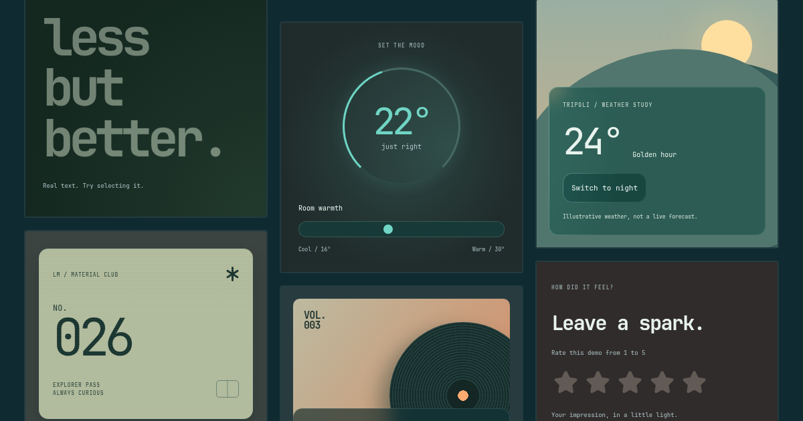

Glass surface
Blur the background and catch the pointer light along the edge.
Get the CSSCSS EXPERIMENT / GLASS & LIGHT
The glass from nabous.dev, without the site around it.
Adjust the material. Keep your markup.
Blur the background and catch the pointer light along the edge.
Get the CSSA background and one border pseudo-element.
Two SVG masks. Shared page light.
The original glassmorphism-text treatment. Selectable HTML; no component required.
The SVGGlassMorph icon treatment, without a layout wrapper.
IMPLEMENTATION
Choose npm for a bundled project or CDN for plain HTML and CSS. Static glass needs no JavaScript.
These snippets follow the settings above, including the optional pointer light and smoothing.
Optional npm adapters: choose Vanilla CSS · npm above for the install command, then reuse the foundation's styles and .material settings. Initialize the tracker once in your app's browser lifecycle, not per SVG.
Vue, Svelte, Angular, and Web Components render the effect after mounting. Use HTML glass text if it must be visible before hydration.
No runtime, canvas, wrappers, or event handlers for static surfaces. The border uses one pseudo-element.
The optional helper writes two inherited variables, at most once per animation frame. It does nothing while idle.
Backdrop blur and gradient painting have a cost. Keep large blurred areas in check and test on your target devices.

THE MATERIAL COLLECTION
Glass surfaces, glowing type, and small interactive worlds. Explore the collection, share an example, or make it your own in the live editor.
Explore all examples ↗